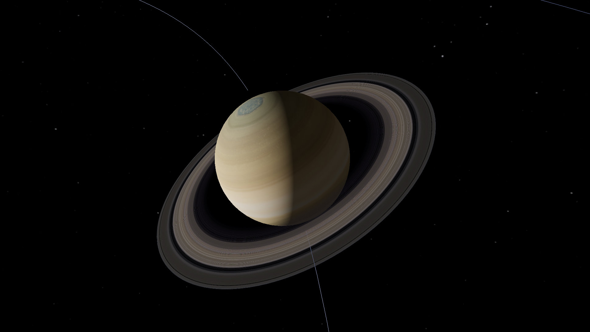

Orbitka
Skala uproszczona
1 j.a. (jednostka astronomiczna) = odległość Ziemi od Słońca,
ok. 150 mln km.
Saturn
Gotowe!Trening ukończony. Miłego lotu.
Saturn
gazowy
olbrzym
Średnica9,1 × Ziemia
Saturn
Ziemia
Na średnicy Saturna zmieści się ok. 9 Ziem.
Saturn ok. 116 500 km · Ziemia ok. 12 700 km
- Rok trwa29,4 roku ziemskiego
- Obrót wokół osi10 h 39 min
CiekawostkaŚrednia gęstość Saturna jest mniejsza niż gęstość wody.
Treść przykładowa · teksty w M4 (Treści)
7 października 20261 dzień/s
1 dzień10 dni1 mies.1 rok